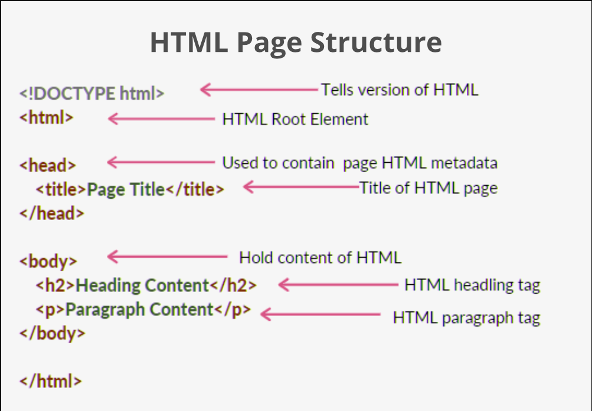

1. HTML
É a linguagem de marcação príncipal na parte de criação das páginas Web.
- HTML significa Hyper Text Markup Language.
- HTML é a linguagem de marcação padrão para criação de páginas da Web.
- HTML descreve a estrutura de uma página da Web.
- HTML consiste em uma série de elementos.
- Os elementos do HTML informam ao navegador como exibir o conteúdo.
- Os elementos do HTML rotulam partes do conteúdo como “Este é um título”, “Este é um parágrafo”, “Este é um link”, etc...
Para gerar um arquivo HTML:
- Instale um programa de código.
- Nos aquivos, crie uma pasta(Não pode conter acentos, espaços e, de preferência, escreva em maiúsculo).
- Na Pasta ou no programa de código, crie um arquivo que, no minímo, tenha o nome de "index.html".
- Escreva no tag HEAD, e em seguida, escreva no tag BODY.